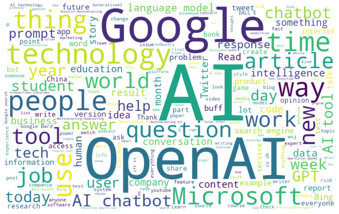

Code
# pip install wordcloud
import csv
import matplotlib.pyplot as plt
from wordcloud import WordCloud, STOPWORDS
with open('tweet_verified_221130-230418_noun.csv', 'r', encoding='utf-8') as file:
reader = csv.reader(file)
next(reader)
row_count = sum(1 for row in reader)
print("There are", row_count, "tweets included in this wordcloud.")
# add custom stopwords to the default STOPWORDS set
custom_stopwords = {'ChatGPT',
'trib', 'al',
'bit', 'ly'}
stopwords = STOPWORDS.union(custom_stopwords)
with open('tweet_verified_221130-230418_noun.csv', encoding='utf-8') as f:
reader = csv.reader(f)
text = []
for row in reader:
text.append(row[3])
# join all text together into a single string
text = ' '.join(text)
# generate a word cloud
wordcloud = WordCloud(width=800, height=500, stopwords=stopwords,
background_color='white').generate(text)
# plot the word cloud
plt.figure(figsize=(12, 10))
plt.imshow(wordcloud, interpolation='bilinear')
plt.axis('off')
plt.show()There are 73937 tweets included in this wordcloud.